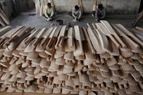
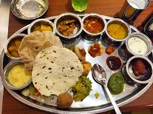

Meerut is one of the prominent Center in the country besides Jalandhar for the manufacture of sports goods.
There are numerous sports companies in the city especially for cricket namely SS, SF, SG, BDM. Players like
MS Dhoni, Virender Sehwag, Yuvraj Singh, Kieron Pollard, Virat Kohli, Kumar Sangakkara and many others have
used bats made in Meerut. 40,000-capacity Kailash Prakash Stadium is located in Meerut.
Sport Shops
HIND SPORTS PVT LTD
D-9 Sports Goods Complex, Delhi Road, Meerut, UP 250001
VISHWA SPORTS CO
Suraj Kund Road, Suraj Kund, Gandhi Nagar,, Meerut, UP 250001
MISHA SPORTS
31, Devi Nagar, Suraj Kund Road Meerut City, Meerut, UP 250002
Direction to Kailash Prakash Stadium
About Meerut
Meerut was founded as Mayarashtra (lit. Maya's country) by Maya, who was the father of Mandodari,
Ravana's wife in the Ramayana. Meerut was the capital of Maya. Thus the city is also known as 'Ravan Ka Sasural' literally meaning "Ravana's wife's home".
In Ramayana, It was known as 'Maydant Ka Kheda', capital of May danav. It was hometown of Mandodari.After the archaeological excavations at Vidura-ka-tila,
a collection of several mounds named after Vidura, in 1950–52, a site 37 km (23 miles) north-east
of Meerut, it was concluded to be remains of the ancient city of Hastinapur, the capital of Kauravas and Pandavas of Mahabharata, which was washed away by Ganges floods.
Meerut is the 63rd-fastest-growing urban area in the world. It is the 14th fastest developing city
in India. A June 2011 report by US financial services firm Morgan Stanley gave Meerut the 5th spot
on the "vibrancy" index, ahead of Delhi and Mumbai. Meerut ranked second on both the financial penetration
index, which measures things like the presence of ATMs and bank branches, and on the consumption index,
indicating the city's transformation into an urban town. While the city ranked in the bottom 10 in job
creations, the report suggests that overall there are plenty of signs of "potential for urbanisation,"
including future employment opportunities.[84] The infrastructure segment of Meerut is currently going
through a boom phase with many new projects coming up in and around the city.[85][86] There are many
new buildings, shopping complexes, malls, roads, flyovers and apartments coming up. The Upper Ganga
Canal Expressway is also under development.[citation needed] On the
India City Competitiveness Index, the city ranked 45th in 2010, 37th in 2011 and 39th in 2012.
Famous Places
Martyrs Memorial
- For : HISTORY BUFFS
- Timing : 09:00 AM - 05:00 PM
Built in the memory of the 1857 war of independence, the Martyrs Memorial offers a walk down the
lanes of history as one explores the museum and the library where the relics, models and paintings
from that era has been kept on display .
Augarnath Temple
- For : GOD LOVERS
- Timing : 06:00 AM - 08:30 PM
It is the place where the great revolt of India's independence in 1857 started. The history of this
temple in Meerut is little known. However, it is said that at this temple, the Maratha rulers used
to perform the pilgrimage on auspicious occasions making it a significant place of worship in the city.
Hastinapur
Hastinapur is a city in the Meerut district in the Indian state of Uttar Pradesh.
Hastinapur, described in Hindu texts such as the Mahabharata and the Puranas as the capital of the Kuru Kingdom,
is also mentioned in ancient Jain texts. Hastinapur is located on the right bank of the Ganges river.
Suraj Kund Park
Located in Gandhi Nagar, Suraj Kund is also one of the oldest parks in the city and it has mythological
connection as well. As per the beliefs, it is the place where Lord Krishna was gifted the Kawatch (armour)
of Karna. This is the reason that it also touted as one of the sacred tourist places in Meerut.
Education Field
Meerut district is an education hub in western Uttar Pradesh, India. It has 4 universities, 80
technical-professional colleges, 150 academic colleges, and 2 medical colleges. The district
also has over 380 schools.
Universities
- Chaudhary Charan Singh University
- Swami Vivekanand Subharti University
- IIMT University
Schools
CBSE
- Dewan Public School, Meerut Westend Road, Meerut 250001.
- Dayawati Modi Academy, Modipuram, Meerut
- Vidya Global school,Meerut baghpat Road
- City Vocational Public School, Meerut Cantonment
- St. John's Senior Secondary School, Meerut Cantonment
- Vardhman Academy, Railway Road
- GTB, GURU TEGH BHADUR PUBLIC SCHOOL WESTERN ROAD, Meerut Cantonment.
- Darshan Academy West End Road,Meerut Cantt
- St. Peter's Academy Kankerkhera, Meerut SARDHANA ROAD, Meerut 250001.
- Ashoka Academy, Kankerkhera, Meerut
ICSE
- St. Mary's Academy
- St. Thomas English Medium School
Restaurant


samrat heaven bar & restaurant
Garh RD Meerut, Meerut - 250002, UP
Alfa Restaurant
339, Bombay Bazar,Near Hanuman Chowk, Meerut Cantt, Meerut
Marwari Bhoj
Metro Plaza, Delhi Road, Meerut 250002, India
Delhi Darbar
Hapur Road ,Kamla Nagar, Meerut, Uttar Pradesh 250002,India
Role of Meerut in 1857 revolt
Indian Mutiny, also called Sepoy Mutiny or First War of Independence, widespread but
unsuccessful rebellion against British rule in India in 1857–59. Begun in Meerut by
Indian troops (sepoys) in the service of the British East India Company, it spread
to Delhi, Agra, Kanpur, and Lucknow.
The Indian Rebellion of 1857 was a major, but ultimately unsuccessful, uprising in
India in 1857–58 against the rule of the British East India Company, which functioned
as a sovereign power on behalf of the British Crown. The rebellion began on 10
May 1857 in the form of a mutiny of sepoys of the Company's army in the garrison town of
Meerut, 40 mi (64 km) northeast of Delhi (now Old Delhi). It then erupted into other mutinies
and civilian rebellions chiefly in the upper Gangetic plain and central India,
though incidents of revolt also occurred farther north and east.
The rebellion posed a considerable threat to British power in that region, and was contained only
with the rebels' defeat in Gwalior on 20 June 1858. On 1 November 1858, the British granted
amnesty to all rebels not involved in murder, though they did not declare the hostilities to have
formally ended until 8 July 1859. Its name is contested, and it is variously described as the Sepoy Mutiny,
the Indian Mutiny, the Great Rebellion, the Revolt of 1857, the Indian Insurrection, and the First War of Independence.